For proving the reflective property of a parabola, only the shape of the parabola would matter, the position would not matter. The vertex equation of a parabola is [f(x) = ((x - h)2/4p) + k], but for proving the reflective property, [f(x) = x2/4p] would suffice.
Let (0, 0) be the vertex, (0, p) be the focus and (a, b) be a random point in the parabola. We will call these points V, F and R:
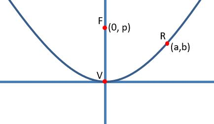The tangent to f(x) at x has the gradient f'(x) = 2x/4p or f'(x) = x/2p, we will call this t(x). For example, t(a) is the gradient of the tangent at a, which is a/2p:
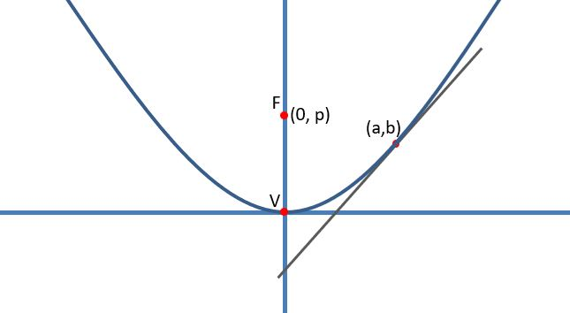The directrix would be at y = -p. Let D be a point at (a, -p), and let E be a point at (a, 0):
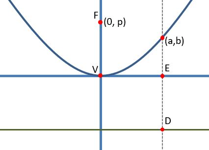Let point M be the intersection between FD and the x-axis.:
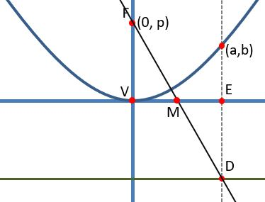Since FV and ED are of the same length, then M is the midpoint of VE and FD, which means M is at (a/2, 0). Now lets try to find the gradient of line MR:
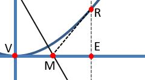The gradient of MR is the length of RE divided by the length of ME, which is b/(a/2), or 2b/a. The value of b is f(a), or 2a2/p, which means the gradient of MR is 2(a2/4p)/a:
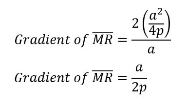Does the above seem familiar? This is equal to t(a), so the line segment MR is the tangent to the parabola.
Let the angle θ be the angle between the t(a) and the line x = a:
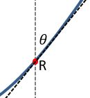This means angle MRE is θ:
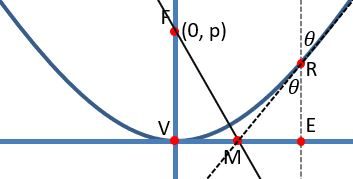Lets call the angle FRM α:
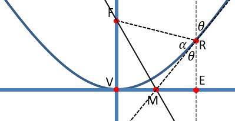The reflection property states that any ray perpendicular to the directrix will bounce off the parabola and pass through the focus:
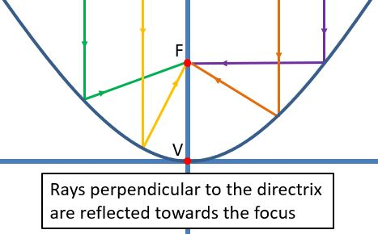In order to prove the reflective property, we need to show that the angles α and θ are equal:
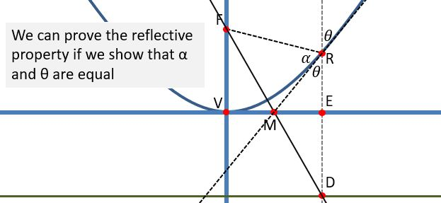By definition of a parabola, the lines FR and RD are equal, which makes the triangle FRD an isosceles triangle. Since M is the midpoint of line FD, then the line MR cuts the isosceles triangle FRD by half, meaning that MR is an angle bisector of FRD, which would mean α and θ are equal.